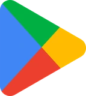
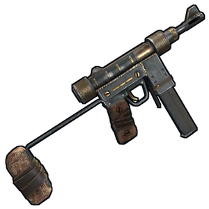
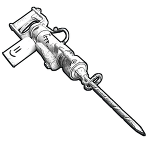
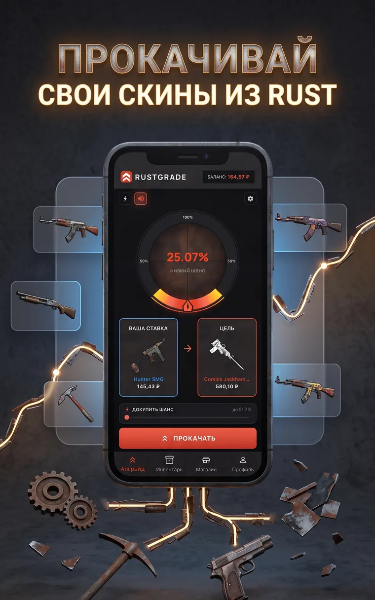
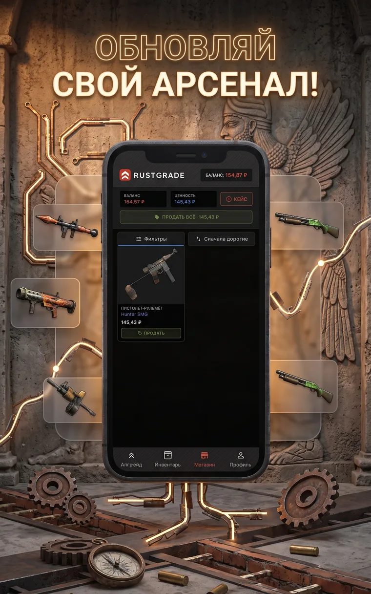
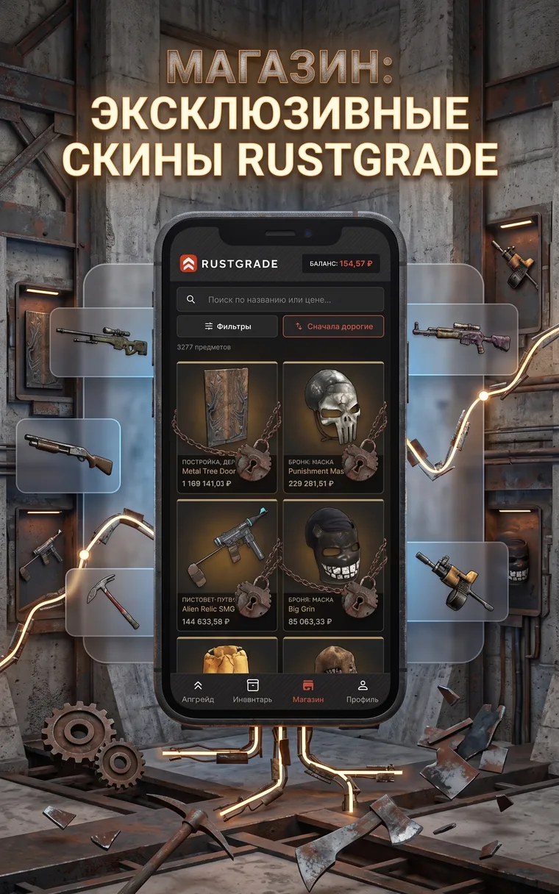
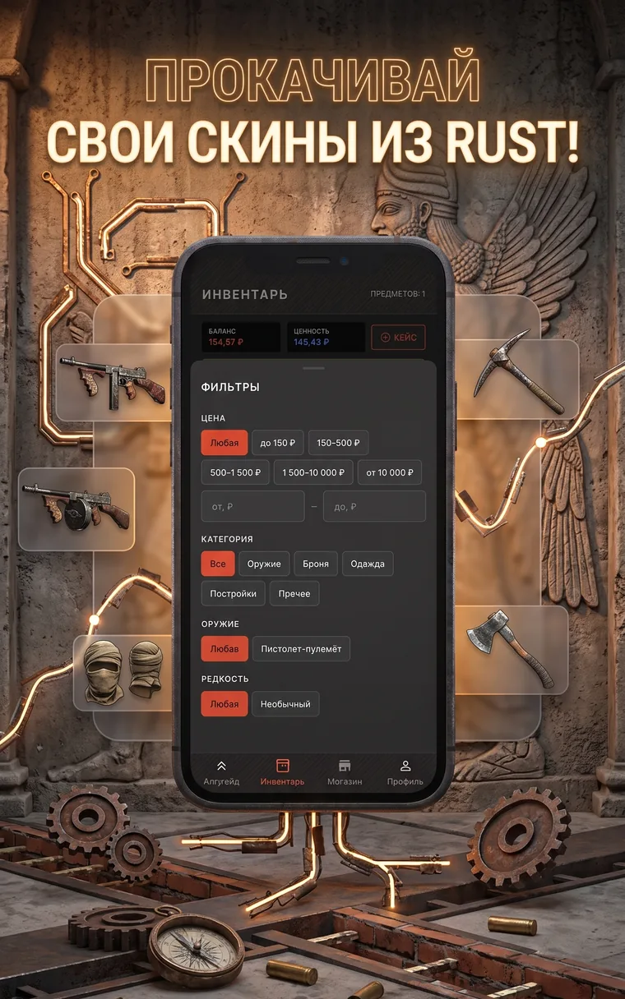

Симулятор апгрейда скинов · Android
Весь азарт апгрейда. Ни одного рубля.
Ставите скин, выбираете цель подороже, крутите колесо. Шанс посчитан до прокрутки и написан в центре — он не меняется, пока стрелка летит. Баланс и предметы игровые: настоящие деньги здесь не принимают, не выплачивают и не выигрывают.

Скоро в Google PlayСсылка появится здесь, как только Google одобрит сборку. Вопросы до релиза — narodniy.team@gmail.com
Колесо апгрейда · попробуйте прямо здесь
низкий шанс
Колесо апгрейда, шанс 25,07 процентаВаша ставка

Hunter SMG
145,43 ₽
Цель

Comics Jackhammer
580,10 ₽
Демо на настоящем каталоге. Прогресс никуда не сохраняется.
прокруток 0 · побед 0
5 277 предметов из мира выживания. Цены справочные, из открытых данных Steam Community Market.
Одна прокрутка — три решения
Апгрейд идёт только вверх: цель должна быть дороже ставки. Чем больше разрыв в цене, тем уже зона выигрыша на колесе — и тем честнее выглядит число, которое вы видите перед прокруткой.
-
Ставка
Собираете лот
Один предмет из инвентаря или сразу несколько — их стоимость складывается в одну ставку.
-
Цель
Выбираете, за чем идёте
Шанс считается как отношение цен и упирается в потолок 75 %. Не хватает процентов — их можно докупить балансом.
-
Прокрутка
Крутите колесо
Стрелка останавливается в зоне выигрыша или мимо. При промахе возвращается утешительный приз — 10–15 % от ставки.
Четыре экрана, и всё

Апгрейд
Колесо, которое не врёт
Процент написан в центре до того, как вы нажмёте кнопку, и зона выигрыша на кольце ровно ему соответствует. Ползунок «докупить шанс» поднимает процент за баланс — видно, сколько стоит каждый пункт. Кому некогда ждать шесть секунд, есть быстрая прокрутка.

Инвентарь
Что выиграно — то ваше
Баланс и ценность инвентаря считаются раздельно, поэтому всегда понятно, чем вы располагаете. Любой предмет продаётся в один тап, весь инвентарь — одной кнопкой.

Магазин
Весь каталог целиком
Оружие, броня, одежда, постройки — 5 277 позиций со справочными ценами. Поиск по названию, сортировка от дорогих к дешёвым и обратно. Купить можно только за игровой баланс.

Фильтры
Найти цель под ставку
Цена диапазоном или вручную от и до, категория, тип оружия, редкость. Пять полос редкости считаются по перцентилю цены: у предметов выживания своих градаций нет.
Цифры, на которых всё держится
- Предметов в каталоге
- 5 277
- Потолок шанса
- 75,00 %
- Стартовый баланс
- 300 ₽ игровых
- Утешительный приз при промахе
- 10–15 % ставки
- Кейс за рекламный ролик
- 75–150 ₽ игровых
- Джекпот в кейсе
- 750–1 500 ₽, шанс 5 %
- Покупки внутри приложения
- нет
- Вход в аккаунт
- не обязателен
- Синхронизация прогресса
- Google, по желанию
- Платформа
- Android
Что обычно спрашивают
- Когда приложение появится в Google Play?
- Сборка 1.0.0 сейчас на проверке. Как только Google её одобрит, кнопка на этой странице станет ссылкой на страницу приложения.
- Как считается шанс апгрейда?
- Шанс равен отношению стоимости ставки к стоимости цели и упирается в потолок 75 %. Он показан в центре колеса до прокрутки и не меняется, пока стрелка летит. Ставка из нескольких предметов складывается, и шанс считается от их общей стоимости.
- Можно ли вывести выигранные предметы в Steam?
- Нет. Предметы нельзя купить за деньги, продать, обменять или вывести за пределы приложения. Steam-аккаунт к приложению не привязывается и не запрашивается.
- Нужен ли аккаунт, чтобы играть?
- Нет. Игра полностью работает в гостевом режиме, прогресс хранится на устройстве. Вход через Google нужен только для того, чтобы перенести прогресс на другое устройство.
- Откуда берутся цены предметов?
- Из открытых данных Steam Community Market. Они справочные, обновляются не мгновенно и офертой не являются. Внутри симулятора это просто числа, по которым считается шанс.
- Есть ли реклама и покупки внутри приложения?
- Покупок нет вообще. Реклама есть в одном месте: за просмотр ролика выдаётся игровой кейс на 75–150 ₽ игрового баланса. Смотреть необязательно.
Честно о симуляторе
Денег здесь нет. Баланс и предметы вымышленные. Реальные деньги не принимаются, не выплачиваются и не выигрываются. Предметы нельзя купить за деньги, продать, обменять или вывести в Steam — и никакой другой игровой аккаунт к приложению не привязывается.
Это имитация азартной механики. Прокрутка устроена как в настоящих апгрейдерах, и приложение не предназначено для детей. Если игра перестала быть игрой — удалите её, прогресс всё равно ничего не стоит.
Мы сами по себе. Приложение создано независимо, не связано с Facepunch Studios Ltd и Valve Corporation, не одобрено и не спонсируется ими. Rust — товарный знак Facepunch Studios Ltd; названия и изображения предметов принадлежат правообладателям и используются, чтобы описать предметы внутри симулятора.
Цены справочные. Они берутся из открытых данных Steam Community Market, обновляются не мгновенно и офертой не являются. Внутри симулятора это просто числа, по которым считается шанс.